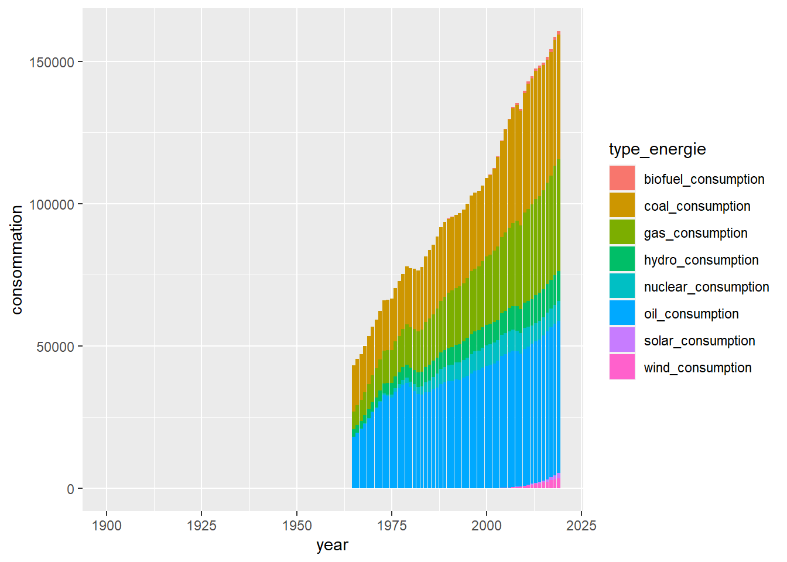

TP about World Energy, Food and Population Datasets
Analysis General
Chart Energy per Source

Chart World Food Production
Chart Evolution of World Population
Analysis Per Continent
Chart Energy per Source per Continent
Chart Energy per Type per Continent
Chart World Food Production per Continent
Chart Evolution of World Population per Continent